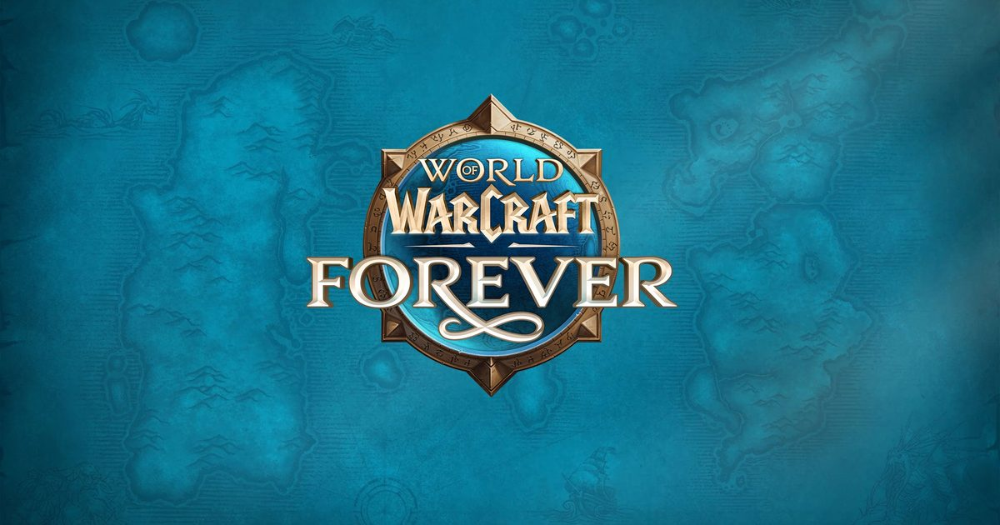

2026-11-04 · 版本形态深读

北京时间 11 月 5 日早上 7 点——官方给的是「11 月 4 日太平洋时间下午 3 点」——《魔兽世界：Forever》全球开服， PC 与 Mac，含在任何一份有效订阅或游戏时间里，不需要单独买本体。 首发四个区域、九个副本、两个团本，团本要到 12 月 9 日才开；外加一个新种族 Skyborne、一个 15v15 战场「暗矛群岛」。 故事线卡得很窄：《魔兽争霸 III：重制版·被遗忘者王国》之后，熔火之心之前。
到这里为止，它听起来像一份很多年前就该发的东西——社区喊了十年的「Classic Plus」。 但如果只把它读成一次怀旧投放，你会漏掉这次真正发生的事。
暴雪给 Forever 定了四条支柱，其中三条是否定句： 没有飞行坐骑、没有等级缩放、没有等级上限提升。 第四条是「世界本身是主角」。
关键的只有最后那条否定句。现代服是每两年一个资料片、等级 +10、旧大陆作废；经典旧世（Era）是把 2005 年那一版冻起来，但也不再长大。 Forever 是第三种东西：等级永远停在 60，但内容继续更新。 官方说得很直白——以后靠 patch 加内容，不靠资料片抬上限。
这句话看着像情怀，其实是一份商业合同。它承诺的是：你今天练到 60 级这件事，永远不会被作废。 二十二年里，WoW 的每一次资料片本质都在做同一件事——让你昨天的努力贬值，好让你明天重买一次进度。 Forever 把这条收入模型从产品定义里删掉了。
| 版本形态 | 等级上限 | 旧内容会作废吗 | 还会长大吗 |
|---|---|---|---|
| WoW 现代服 | 每资料片 +10 | 会，系统性作废 | 往上长 |
| WoW 经典旧世 Era | 锁 60 | 不存在作废 | 不长，只重开 |
| WoW Forever | 锁 60，永不提升 | 承诺不作废 | 往横长 |
| Old School RuneScape | 99，十三年未动 | 不存在作废 | 往横长，内容靠社区投票 |
| FF14 | 每资料片 +10 | 副本层作废，剧情不废 | 往上长，且跳票中 |
把 OSRS 那一行放进来，这件事的性质就变了。 Old School RuneScape 从 2013 年跑到现在，十三年不加等级上限，靠每周小更新和新区域横向扩，内容该不该做交给社区投票。 它是「不升级也能活」这条路唯一的长跑样本。 Forever 等于公开承认：这条路成立，而且我们打算走。 说的是「世界是主角」，做的是把 RuneScape 的模型搬进艾泽拉斯。
代价也很具体。没有 +10 级，就没有「重开一次」的仪式感。 玩家的成长曲线只能靠装备、声望、区域专业化去铺，暴雪必须把「数字变大」带来的爽感，换成「路变多」带来的选择感。 这是更难的设计，也是唯一能撑十年的设计。
第一批官宣里被喊得最响的是亡灵圣骑士。
请把这个消息放回它该在的位置上看：从 2004 年到现在，「亡灵不能导引圣光」是 Warcraft 世界观里少数几根承重墙之一。 被遗忘者能当战士、法师、术士、牧师（暗影侧），唯独当不了圣骑士——因为圣光对他们不是信仰，是灼烧。 亡灵骑士这个位置，二十二年都由死亡骑士占着，靠的是暗影与死灵魔法，不是圣光。
官方的解释只有一句：「她们凭意志与虔诚，再次导引了圣光。」 同批放出的还有兽人法师、巨魔术士、侏儒牧师、矮人萨满、人类猎人——每一组都在松动一条旧设定。
所以「世界本身是主角」这句话的真实含义是：地形不动，规则可以动。 这在怀旧类产品里是最反常的一步。怀旧产品通常卖的就是「规则不可动」——那才是安全感的来源。 Forever 反过来：地图一寸不改，规则先改。
我们认为这条比任何新区域都重要，因为它决定了 Forever 后面还能不能继续长。 如果职业与种族搭配可以松，那「60 级上限」也应该被理解成「等级不动，系统照长」。 这才是 Forever 能活十年的前提：锁的是数字，不是设计空间。 反过来说，如果哪天连等级上限也开始松口，这个品牌就自己作废了。
2026 年的整个行业都在删摩擦：自动寻路、跨图传送、等级缩放，能省的都省了。 Forever 三条全反着来——无飞行、无缩放、「30 到 45 级就是 30 到 45 级，早去了就是被黄名字怪打死」。
但有两处细节说明他们不是想让你难受。
第一，野外营地（Wilderness Camping）。可以在野外搭营地，休息、做团体烹饪 buff、给队伍设一个临时重生点。 这不是便利性功能，这是在把「路上」变成内容——你死在半路不用回城重跑四十分钟，但你也必须先在野外扎下来。 第二，三条新航线。暴风城港—奥伯丁、米奈希尔—南海镇—奥伯丁（三站摆渡环线）、塔纳利斯—火药港。 没有飞行坐骑，跨大陆的时间成本会爆炸；这三条线是在给「无飞行」修血管。
摩擦只有在被设计过之后才是内容，否则就是罚站。 从这两处看，暴雪这次分得清。真正的考验在 30 到 45 级那条新边疆「河间地」—— 150 多个新任务、新声望、中立地精港，它要接住的是原本在荆棘谷、阿拉希、凄凉之地之间来回跳的那一段。 这一段是经典旧世最松的一段，也是最容易被做成「填充物」的一段。
官方把 Forever 称作「第三个永久体验」，和现代服、经典旧世并列。 这句话的分量比它听起来重：WoW 不再是一个游戏，是一个有三条时间线的品牌。 现代服往前跑，经典旧世停在 2005 年，Forever 停在 60 级但继续长。
留存逻辑也跟着变了。以前是「让你追上」——新资料片来了，回来追。现在是「让你挑一条停在那儿」。 对一个用户寿命已经见顶的订阅制 MMO，这是最自然的解法：同一批人，三种节奏，一份月费。
同一套思路还藏在登录界面里。玩家第一次进 Forever 要先选「体验预设」——偏传统的经典观感（更简化的画面、标准模型、默认关掉大部分现代界面引导），还是更现代的呈现；然后再选规则集。 把「怀旧程度」做成一个开关，等于承认怀旧是一种偏好而不是一种立场。 这和我们上周聊《时之笛》Switch 2 重制时提到的同一件事是镜像的：任天堂把旧版本做成 2027 年的 amiibo 皮肤卖给你，暴雪把皮肤直接放在登录界面上让你自己拨。前者收钱，后者收留存，都想解决同一个问题——让不同年代的人在同一个产品里各待各的。
其一，那句「无需单独购买」有没有折扣。 官方口径是含在订阅里。但多方整理指出，新种族 Skyborne 与它的 1–12 级起始区 Zephras Isle 绑在 Skyborne Heroic Pack（欧服约 €29.99）及以上版本； 不买包的人，即使订阅有效，也开不了这个种族、进不去这张图——等于一张新地图加一个新种族事实上被挡在付费墙后。 两个口径之间有裂缝，我们不敢替任何一方断言，只能说：开服当天亲自验一次，比转述任何一方的说法都可靠。 如果为真，「含在订阅内」这句话在第一天就要打折；如果为假，那是渠道信息污染——但污染会一直留着。
其二，满级内容在首发当天是没被验证过的。 封闭测试从 9 月 17 日开到 10 月下旬，等级上限只到 30。 也就是说，测试者见过 Zephras Isle 和河间地的前半段，没人见过海加尔山——那张 60 级终局图，和它上面的两个团本。 团本要等 12 月 9 日，跟 40 人奥妮克希亚的巢穴一起开。 于是首发那五周，Forever 的实际内容边界是「1 到 60 级的任务与副本」，60 级之后是一片空地。 这不是缺陷，是一个明确的选择：先把升级路做成内容，再谈终局。但你要是冲着团本来的，现在买等于买了一张五周后的票。
概念结构 8.8 / 执行风险 7.0 → 综合 7.9。 给概念高分，是因为「锁 60 但继续长」这个决定在商业上是反直觉的、在设计上是正确的； 扣执行分，是因为首发终局空窗、测试没覆盖满级、以及付费口径不清这三件事都压在同一天。
注意这次的宣传词。整套物料几乎不提「怀旧」（nostalgia），只提「永久」（forever / permanent）。 词换了，卖点就换了：怀旧是一次性的情绪消费，永久是一个可以按月收费的承诺。 这不是给老玩家的礼物，这是给「不想再追版本」的人开的一个出口。
Forever 真正抢的用户不是 FF14 的人，是那些每次资料片开服玩三周就 AFK 的人。 这批人对「新内容」已经脱敏，但对「我的角色还在那儿、我的公会还在那儿」还有感情。 Forever 卖的就是这份感情的租赁权。 所以我们倾向于认为它会长得比预期慢、但活得比预期久——它是订阅制游戏的养老院，而养老院是一门稳定的生意。
三条前车之鉴可以并排看： Old School RuneScape 证明了「不升级 + 社区投票」能跑十三年； EverQuest 的 Progression 服 证明了「阶段性重走」卖得动，但玩家走完就散，因为终点是别人的旧终点； 2019 年的 WoW Classic 证明了「只复刻不生长」有天花板——开服爆满，半年后人口腰斩。 Forever 是把这三条经验合成一个东西：OSRS 的生长方式 + EQ 的怀旧节奏 + Classic 的地图忠实度，然后把 60 级钉死。
开服后我们准备记三个数： ① 组队依赖度——从 1 级到 60 级，一共被几次「必须组队才能过」的关卡卡住。数字太低说明它其实是个单机游戏，太高说明它忘了自己已经 22 岁； ② 跑图放弃率——记录因「路太远」而主动放弃任务的次数，这是「无飞行」是否被设计过的最直接读数； ③ 海加尔山的内容密度——12 月 9 日团本开之前，那张 60 级图能撑几天。
二十二年前它教你「升级」；今天它卖你「不用再升了」。 这不是退步，是这门生意终于承认了一件事：玩家的耐心比版本号稀缺。
如果你从来没玩过 WoW，Forever 其实是二十年来最好的一次入场——没有 20 年剧情要补，没有 12 个资料片要买，60 级就是终点，路上那一千多个任务就是全部内容。 如果你是老玩家，也请把期望值调对：它不是一个更聪明的经典旧世，它是一个决定不再长大的艾泽拉斯。 想清楚这一点，再决定要不要把角色放进去。